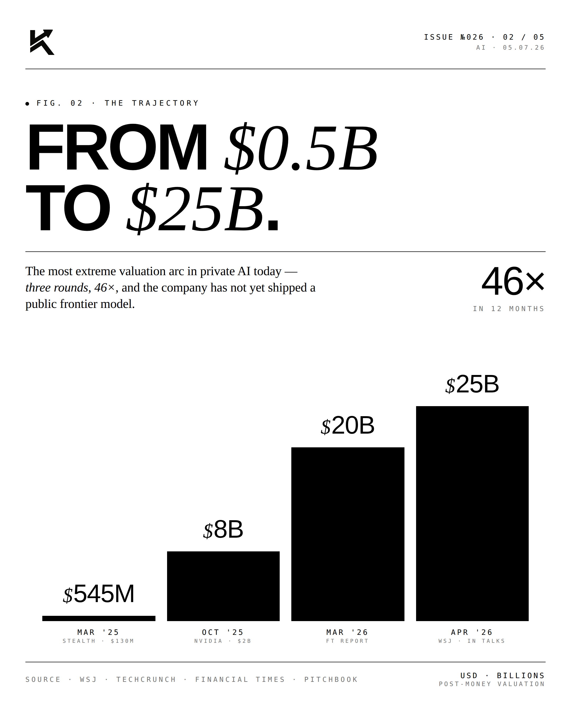
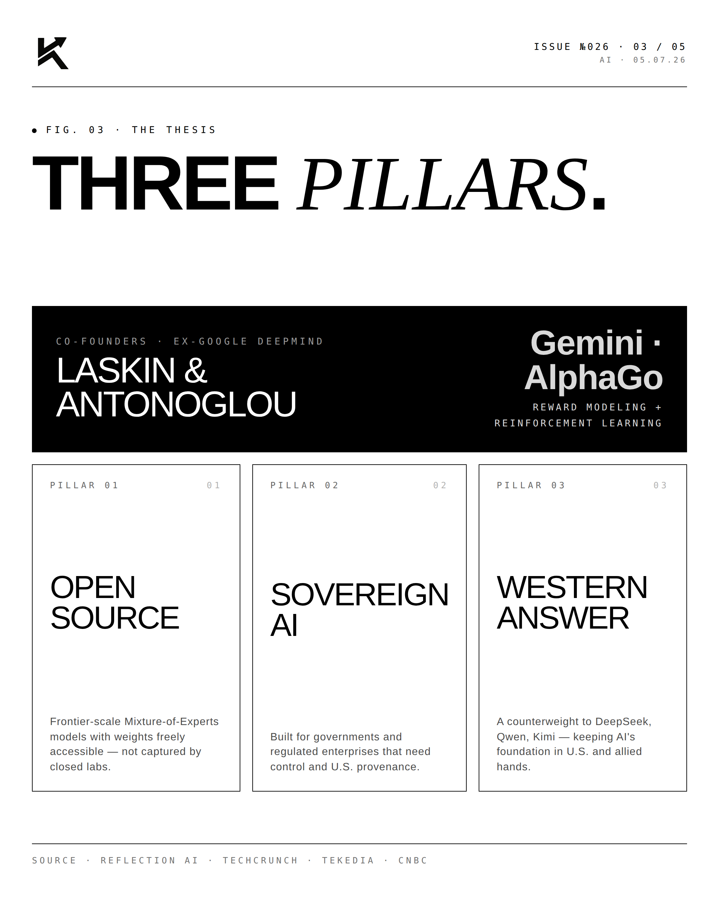
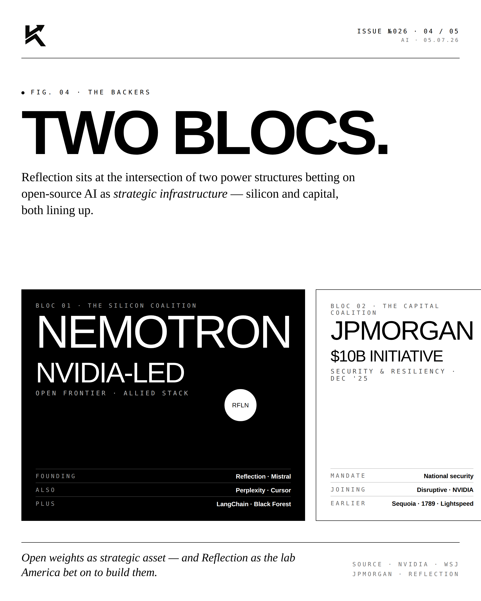
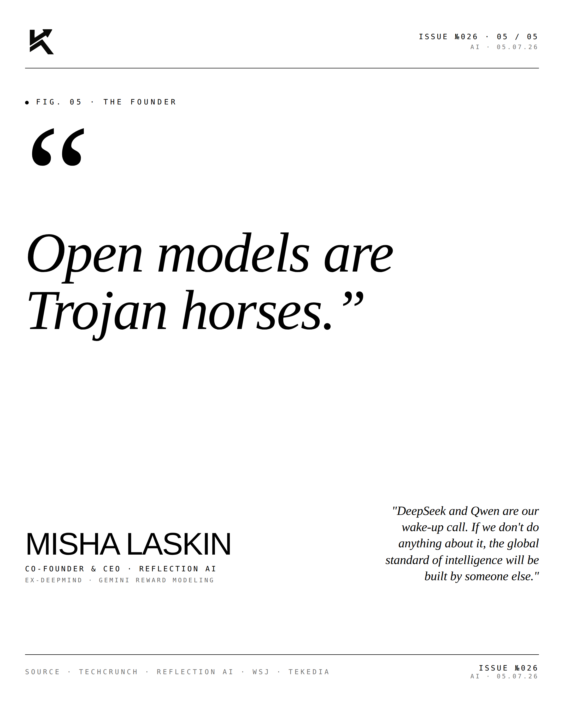

Reflection.
Reflection AI is building autonomous software engineers. Not copilots. Not assistants. Agents that ship code. The trajectory is steep — and the geopolitical stakes are real.

The Trajectory.
Reflection AI was founded by ex-DeepMind researchers with a simple thesis: software engineering is a closed-domain task that AI will do better than humans within five years. The trajectory of capability has compressed faster than anyone — including the founders — predicted.

The Pillars.
The product strategy rests on three pillars: superhuman code reasoning, long-horizon autonomy, and verifiable correctness. Where current coding tools (Cursor, Copilot, Cognition's Devin) work in shorter loops, Reflection is targeting multi-day autonomous engineering tasks with formal verification of correctness.

The Blocs.
The geopolitical layer matters here. Autonomous coding is dual-use technology — civilian engineering tool by day, cyber capability by night. China is investing heavily. So is the U.S. Reflection sits squarely on the U.S. side of that ledger.
"The first software
engineer that ships."MISHA LASKINCo-Founder & CEO · Reflection AI
"We're not building a tool that helps engineers code faster. We're building the first software engineer that completes tasks end-to-end."


The autonomous coding race is on. The blocs are forming. Reflection is the U.S. bet.
Disclosure
The author is a Limited Partner in 1789 Capital, which holds a position in Reflection AI. Personal commentary and editorial analysis. Not investment advice, not an offer or solicitation.